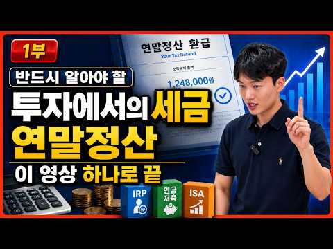
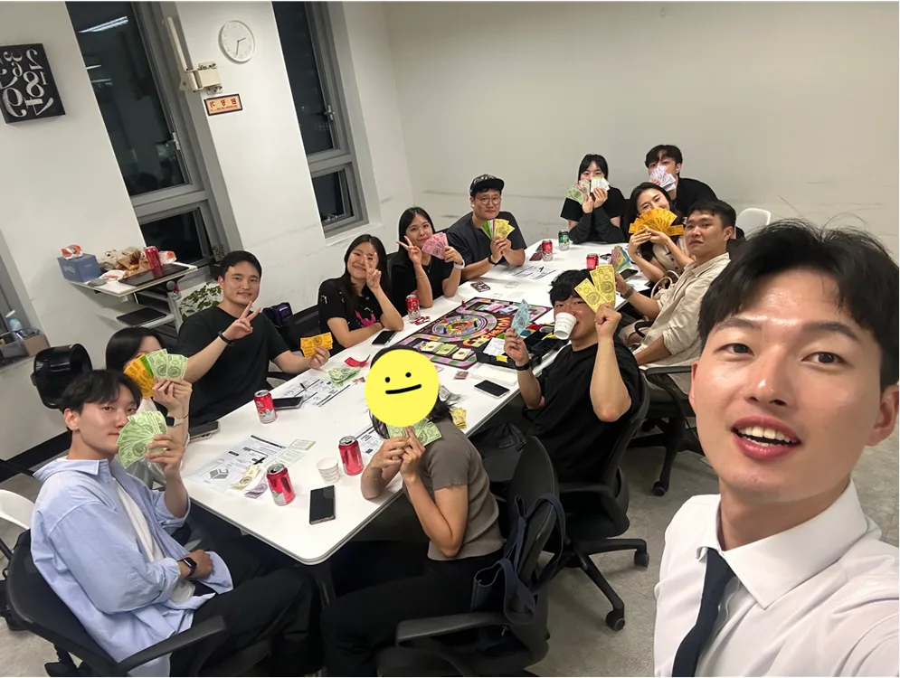
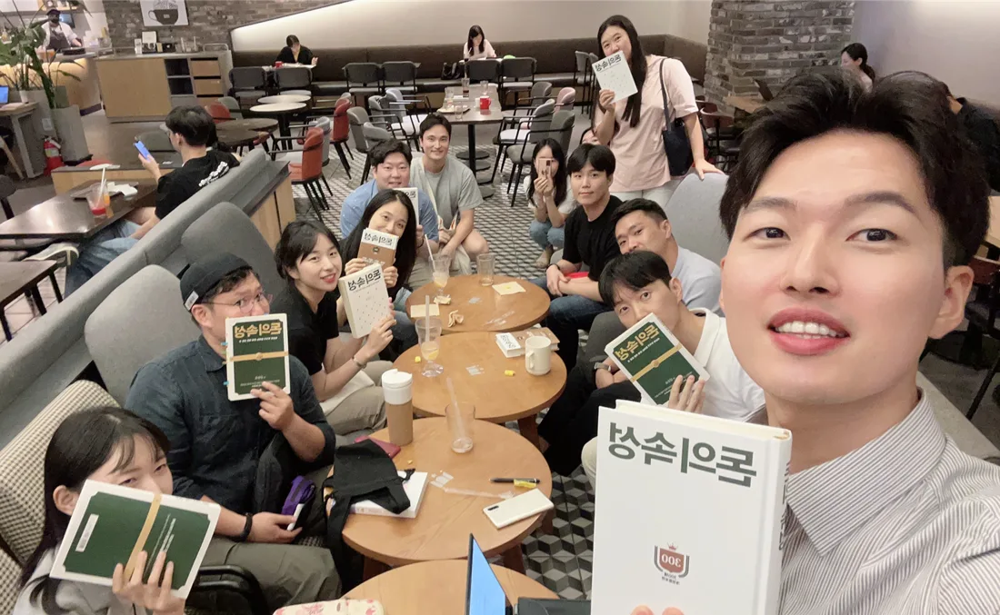
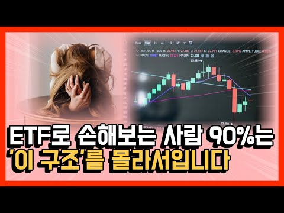

01 / 월급과 성과급
소득은 늘었는데,
자산도 잘 늘고 있을까요?
월급은 생활비로, 성과급은 그때그때 필요한 곳에. 우리 집 돈이 어디로 가는지부터 살펴봅니다.
대기업 직장인 · 부부 자산관리
월급과 성과급은 어디에,
집과 자녀, 노후는 어떤 순서로.
우리 집 돈의 구조부터 설계합니다.
SBS Biz 방송 출연 · 자산관리 칼럼 연재
한 분부터 상담 가능 · 부부 동반 가능
WORK YOU CAN SEE
방송과 강의, 상담과 모임.
직접 보고 확인하실 수 있는 활동입니다.

직장인 투자자를 위한 세금 강의와 금융교육 콘텐츠를 제작합니다. 클래스101 강의 제작도 진행해 왔습니다.
공개 세금 강의 보기 ↗
재테크 행사와 금융 취업 세미나를 통해 자산관리와 금융 커리어를 설명합니다.
지난 금융 세미나 소개 →
돈과 삶을 주제로 책을 읽고 이야기를 나눕니다. 매월 선정도서와 발제문으로 배움을 이어갑니다.
11월 선정도서 자료 보기 ↗
월급·성과급·주택·자녀자금·은퇴. 대기업 직장인 부부가 마주하는 선택을 하나의 계획으로 정리합니다.
실제 상담 사례 보기 →우리 집에서는 무엇부터 정리해야 할까요?
내 상황에 맞는 상담 문의 →OUR MONEY, OUR PLAN
월급은 생활비로, 성과급은 그때그때 필요한 곳에. 우리 집 돈이 어디로 가는지부터 살펴봅니다.
주택 마련과 대출, 자녀 교육비와 노후. 필요한 시기에 맞춰 자금을 나누고 우선순위를 정합니다.
대출을 먼저 갚고 싶은 마음과 투자를 이어가고 싶은 마음. 두 분의 생각을 함께 듣고 계획을 세웁니다.
CONSULTING STORIES
교육비, 대출, 은퇴.
실제 상담에서 정리한 선택과 실행 순서입니다.
교육비 · 대출 · 부부의 노후 준비
한 분의 퇴직 이후에도 이어지는 생활비와 대출 부담. 소득이 달라지는 시기에 맞춰 계획을 살폈습니다.
부부의 퇴직 시점과 연금 수령 시점을 나란히 놓고, 그 사이에 필요한 생활비와 대출 부담을 점검했습니다. 절세 계좌 활용과 자동이체·자동매수 설정 방법도 안내했습니다.
매달 들어오는 월급과 비정기적인 성과급의 역할을 나눠, 새로운 가정의 자금 계획을 제안했습니다.
결혼 관련 지출과 할부 종료 시점을 살펴보고, 이후 가능한 저축액을 점검했습니다. 정기 저축은 중장기 목표에 나누고, 성과급은 세금·절세 계좌·비상금 등을 함께 고려하도록 안내했습니다.
실제 상담 기록을 바탕으로 식별 정보를 생략해 재구성했습니다. 상담 당시 논의·제안한 계획을 소개하며, 실행 완료나 투자 성과를 의미하지 않습니다. 개인의 상황에 따라 제안 내용은 달라집니다.
THREE MEETINGS, ONE PLAN
진단에서 제안, 실행까지.
3번의 상담을 하나의 계획으로 연결합니다.
소득·지출·자산·대출을 점검하고 주택, 자녀, 노후 등 준비할 목표의 우선순위를 정합니다.
저축·투자·연금·보험을 함께 살피고 목표에 맞는 자금 배분과 절세 계좌 활용 방향을 제안합니다.
제안 내용을 바탕으로 실행할 항목과 순서를 정하고, 궁금한 점을 확인합니다.
간단한 문의 → 비용·일정 안내 → 상담 확정 → 상세 설문 작성 → 3회 컨설팅
YOUR FINANCIAL PARTNER
남진우 핀사이트랩스 PB팀장
대기업 직장인과 부부의 재무상담을 중심으로,
흩어진 금융을 한 가정의 계획으로 연결합니다.
자산관리 컨설팅 시작개인의 재무상태와 목표에 맞춘 상담
의료인 특화 컨설팅소득과 세금 구조를 함께 고려한 자산관리
대기업 임직원·부부 상담월급·성과급·주택·자녀·은퇴를 함께 설계
START WITH A SMALL STEP
BEFORE WE MEET
아닙니다. 한 분이 먼저 시작할 수 있고, 배우자와 동반 상담도 가능합니다.
첫 문의는 이름·연락처·주요 고민만 남겨주시면 됩니다. 비용과 일정을 안내하고 상담이 확정된 뒤 상세 설문과 준비 자료를 안내합니다.
YOUR NEXT STEP
현재 상황을 진단하고, 실행할 순서까지 정리합니다.
최종 할인가 · 부부 동반 추가 비용 없음
한 분부터 시작하셔도 좋습니다. 문의 단계에서 결제하지 않습니다.